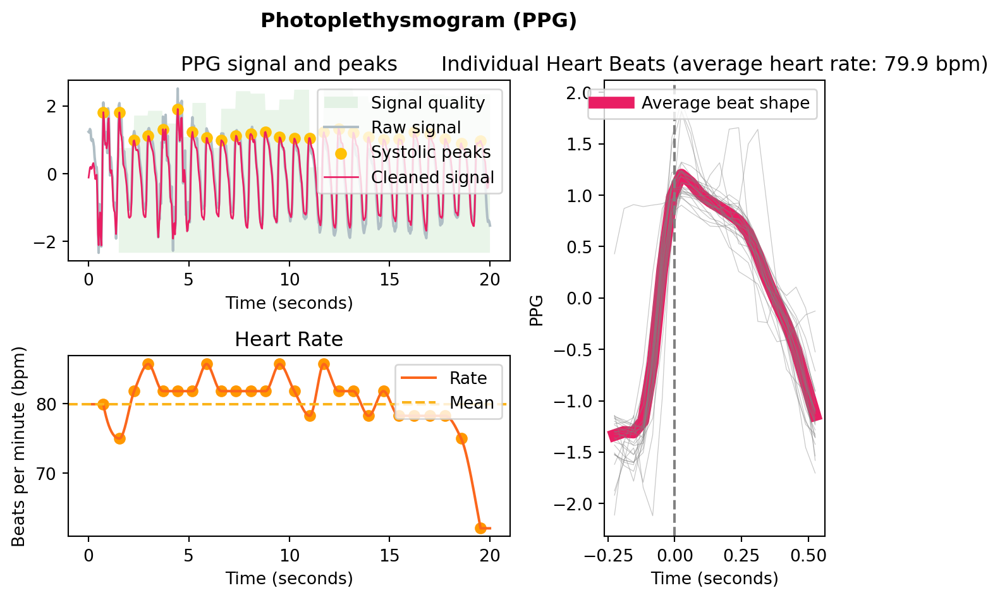

Introduction to Remote Photoplethysmography (rPPG)
rPPG
Over the past year, as part of my Bachelor of Engineering, I’ve been working on a remote photoplethysmography project, with specific contributions of creating an iOS application, and of extending this work into Atrial Fibrillation (AF) detection. I thought it might be interesting to write about rPPG from a few perspectives. This post is a quick crash course collating the general state-of-the-field as discovered while researching this project.
What is rPPG?
In order to understand rPPG, it would be good to first introduce photoplethysmography. Photoplethysmography is a technique used to detect changes in blood volume based off changes in skin luminance. This is a super common technique- you see it everyday in your Apple Watch/ Fitbit/ Garmin. A light (typically green) shines from the wrist-based watch. A light sensor monitors how much of that comes back. Based on that, you can read a user’s heart rate, and increasingly other information such as heart rate variability (HRV) or blood oxygen levels. The below figure, from Dzedzickis, Kaklauskas, and Bučinskas (2020), is a pretty good illustration:
That’s photoplethysmography. Remote photoplethysmography (rPPG) applies the same idea without skin contact, using a video feed. As blood volume changes, the skin’s reflectance shifts subtly over time, and a camera can pick up those tiny variations. The challenge is that video introduces many more sources of noise than a wrist-worn sensor, which controls lighting, distance, and motion much more tightly.
A general overview of rPPG
There are many different techniques used in rPPG but they generally follow this pipeline:
Capture video Video is taken, typically of a face.
Track region(s) of interest It is necessary to decide upon an area of the face from which the signal will be extracted. A face is tracked using a landmarking model, such as Davis E. King’s DLib 68-point landmark model (King 2015). As the name implies, the model identifies 68 key points on the face. You can then reference these to create consistent areas on the face to track.

There has been different work on the best regions of interest (ROIs) to track. A well-structured analysis was done by Kim, Lee, and Sohn (2021) and their results agree with the generally held wisdom: the cheeks and forehead are the best places to extract a signal from.
Other work doesn’t use areas per se, instead opting for a ‘skin mask’ that detects the skin on the face and ignores non-pulsatile things such as hair. You can then use the whole identified skin area as your signal.
I think this may be overkill; from experience I’ve found that the ROI selection is less important than what you do in step 5.
- Extract raw colour signals
For each frame, we now have a lot of information (RGB values) contained within the identified region(s). It is necessary to reduce this down. Typically, a mean of the RGB values is taken, but it is also possible to use a median. There is also other works that use other colour spaces - for example Yang et al. (2016) use the CIELab colourspace.

- Pre-process
Now that we have a simple signal per frame, the next step is to stop thinking frame-by-frame. Heartbeat is inherently temporal, so almost every rPPG method works on short sliding windows. In this step, we can perform simple pre-processing- such as bandpass filtering or normalisation. The below is the result of applying a 4th-order Butterworth filter to the Green signal from the example in step 3. Note the signal is normalised prior to bandpass filtering.

Note the large spike just after the 500th frame- this signal could benefit from a sliding-window normalisation in order to standardise the peaks.
- Convert colour changes to a pulse signal
This is the step where a lot of research has been conducted and can be considered the ‘trick’ with rPPG. The earliest rppg paper by Verkruysse, Svaasand, and Nelson (2008) simply took the green signal as the pulsatile component, “consistent with the fact that (oxy-) hemoglobin absorbs green light better than red and penetrates sufficiently deeper into the skin as compared to blue light to probe the vasculature.”
Further studies have introduced a plethora of new techniques. The general idea of any of these techniques is to maximise the pulsatile component while minimising noise. A good analysis of the main techniques was done by Boccignone et al. (2020). A newer analysis was also done by Haugg, Elgendi, and Menon (2022). These tend to agree that there is no ‘one best’ technique- it depends on various factors.
In order to give you a general idea of how these techniques work, I will explain the CHROM projection (Haan and Jeanne 2013).
NoteThe CHROM projection
After normalising the mean RGB traces within the region of interest, let \(\tilde r(t)\), \(\tilde g(t)\), and \(\tilde b(t)\) denote the temporal colour fluctuations. The chrominance components are \[\begin{align} X(t) &= 3\,\tilde r(t) - 2\,\tilde g(t),\\ Y(t) &= \tfrac{3}{2}\,\tilde r(t) + \tilde g(t) - \tfrac{3}{2}\,\tilde b(t), \end{align}\] with corresponding standard deviations \(\sigma_X\) and \(\sigma_Y\) evaluated over the sliding analysis window. The final projected pulse trace is then \[\begin{equation} C(t) = X(t) - \frac{\sigma_X}{\sigma_Y} \, Y(t). \end{equation}\]
The projection works in a chrominance subspace to reduce intensity / illumination variation and then adaptively combines \(X\) and \(Y\) so that the motion/lighting-correlated components cancel (via the \(\sigma_X\) / \(\sigma_Y\) scaling), leaving a stronger pulsatile trace.
- Post-process to calculate vital sign(s)
Now that the signal is into a singular waveform, this can be processed into a signal fairly trivially. Neurokit (Makowski et al. 2021) has some good resources for this in Python, mostly designed for PPG applications, but they will work similarly with the rPPG signal (provided it is of a good quality).
This is an example I generated using a simulated rppg signal, to illustrate the type of processing it will do:
References
Boccignone, Giuseppe, Donatello Conte, Vittorio Cuculo, Alessandro D’Amelio, Giuliano Grossi, and Raffaella Lanzarotti. 2020. “An Open Framework for Remote-PPG Methods and Their Assessment.” IEEE Access 8: 216083–103. https://doi.org/10.1109/ACCESS.2020.3040936.
Dzedzickis, Andrius, Arturas Kaklauskas, and Vytautas Bučinskas. 2020. “Human Emotion Recognition: Review of Sensors and Methods.” Sensors 20 (January): 592. https://doi.org/10.3390/s20030592.
Haan, Gerard de, and Vincent Jeanne. 2013. “Robust Pulse Rate from Chrominance-Based rPPG.” IEEE Transactions on Biomedical Engineering 60 (10): 2878–86. https://doi.org/10.1109/TBME.2013.2266196.
Haugg, Fridolin, Mohamed Elgendi, and Carlo Menon. 2022. “Effectiveness of Remote PPG Construction Methods: A Preliminary Analysis.” Bioengineering 9 (10): 485. https://doi.org/10.3390/bioengineering9100485.
Kim, Dae-Yeol, Kwangkee Lee, and Chae-Bong Sohn. 2021. “Assessment of ROI Selection for Facial Video-Based rPPG.” Sensors 21 (23). https://doi.org/10.3390/s21237923.
King, Davis E. 2015. “Shape_predictor_68_face_landmarks.dat.bz2.” Dlib model file download. http://dlib.net/files/shape_predictor_68_face_landmarks.dat.bz2.
Makowski, Dominique, Tam Pham, Zen J. Lau, Jan C. Brammer, François Lespinasse, Hung Pham, Christopher Schölzel, and S. H. Annabel Chen. 2021. “NeuroKit2: A Python Toolbox for Neurophysiological Signal Processing.” Behavior Research Methods 53 (4): 1689–96. https://doi.org/10.3758/s13428-020-01516-y.
Verkruysse, Wim, Lars O. Svaasand, and J. Stuart Nelson. 2008. “Remote Plethysmographic Imaging Using Ambient Light.” Optics Express 16 (26): 21434–45. https://doi.org/10.1364/OE.16.021434.
Yang, Yuting, Chenbin Liu, Hui Yu, Dangdang Shao, Francis Tsow, and Nongjian Tao. 2016. “Motion Robust Remote Photoplethysmography in CIELab Color Space.” Journal of Biomedical Optics 21 (11): 117001. https://doi.org/10.1117/1.JBO.21.11.117001.